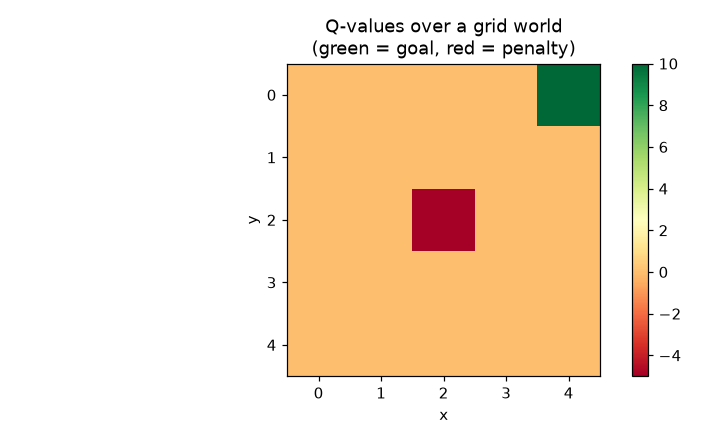

Reinforcement Learning (Q-Learning) — AI engineering example · part of the MLOps monorepo
This example is grounded in Reinforcement Learning (Q-Learning). The equations below drive every forward and backward pass in the implementation.
RL agents learn by interacting with an environment. The return $G_t$ is the discounted sum of future rewards. The Bellman equation decomposes $Q^\pi$ into immediate reward plus discounted future value. Q-learning updates action-values toward the Bellman optimality target.
Concrete forward-pass / update evaluation using the algorithm's own equations:

Interactive grid world with agent path; Q-value heatmap; episode reward curves; epsilon-greedy action distribution.
The example follows a consistent data → train → evaluate → serve pipeline. Inputs are loaded and validated, transformed by the core algorithm, scored against held-out data, and exposed through a REST API.
| Class | Public methods | Responsibility |
|---|---|---|
SolveRequest | — | Request to solve a maze. |
SolveResponse | — | Response with maze solution. |
StepRequest | — | Request to compute next action for a given state. |
StepResponse | — | Response with recommended action. |
TrainRequest | — | Request to trigger training. |
TrainResponse | — | Response from training. |
StatsResponse | — | Model statistics response. |
DriftResponse | — | Drift detection response. |
QLearningAgent | __post_init__, _ensure_trained, get_action, update, train_online, train_offline, _step, _compute_reward, solve_maze, evaluate, save, load, to_dict | Tabular Q-learning agent for grid-world maze navigation. Args: n_states: Number of states in the environment n_actions: Number of actions (4 for up/down/left/right) learning_rate: Alpha - Q-value update step size discount_factor: Gamma - future reward discount epsilon: Initial exploration rate epsilon_min: Minimum exploration rate epsilon_decay: Epsilon decay per episode mode: Learning mode - "online" (interactive) or "offline" (from dataset) seed: Random seed for reproducibility |
data.py reads the source dataset and splits train/test.model.py applies the mathematics from Section 1.api.py exposes prediction endpoints with drift detection.Key design choices in this module: a pure-NumPy implementation (no PyTorch/TensorFlow), schema validation via ai_core.validation, structured JSON logging through ai_core.logging, Prometheus metrics from ai_core.metrics, and MLflow/model-registry persistence via ai_core.model_registry. The FastAPI service wraps the trained model with observability middleware from ai_core.fastapi_middleware.
The most important behaviour is summarised below; full source for each module is collapsible so the page stays readable while remaining self-contained.
QLearningAgent.evaluate(maze, n_episodes, max_steps)Evaluate the learned policy. Args: maze: Maze grid n_episodes: Number of evaluation episodes max_steps: Maximum steps per episode Returns: Dictionary with evaluation metrics
"""Q-Learning agent for robot maze navigation.
Implements tabular Q-learning with:
- Standard Q-value update rule
- Epsilon-greedy exploration with decay
- Positive and negative reinforcement reward shaping
- Online learning (interactive) and offline learning (from fixed dataset)
- Eligibility traces (optional SARSA-style)
- Proper serialization with metadata
"""
from dataclasses import dataclass, field
from typing import Literal
import numpy as np
from robot_maze_navigation.data import (
ACTION_DELTAS,
get_goal_positions,
get_start_position,
state_to_index,
)
@dataclass
class QLearningAgent:
"""Tabular Q-learning agent for grid-world maze navigation.
Args:
n_states: Number of states in the environment
n_actions: Number of actions (4 for up/down/left/right)
learning_rate: Alpha - Q-value update step size
discount_factor: Gamma - future reward discount
epsilon: Initial exploration rate
epsilon_min: Minimum exploration rate
epsilon_decay: Epsilon decay per episode
mode: Learning mode - "online" (interactive) or "offline" (from dataset)
seed: Random seed for reproducibility
"""
n_states: int
n_actions: int = 4
learning_rate: float = 0.1
discount_factor: float = 0.99
epsilon: float = 1.0
epsilon_min: float = 0.01
epsilon_decay: float = 0.995
mode: Literal["online", "offline"] = "online"
seed: int = 42
# Learned state
q_table: np.ndarray | None = None
training_errors: list[float] = field(default_factory=list)
episode_rewards: list[float] = field(default_factory=list)
episode_lengths: list[int] = field(default_factory=list)
n_episodes_trained: int = 0
n_steps_total: int = 0
def __post_init__(self):
"""Initialize Q-table with small random values or zeros."""
rng = np.random.default_rng(self.seed)
self.q_table = rng.uniform(0.0, 0.01, size=(self.n_states, self.n_actions))
self._rng = np.random.default_rng(self.seed)
def _ensure_trained(self) -> None:
"""Ensure Q-table is initialized."""
if self.q_table is None:
rng = np.random.default_rng(self.seed)
self.q_table = rng.uniform(0.0, 0.01, size=(self.n_states, self.n_actions))
def get_action(self, state: int, training: bool = True) -> int:
"""Select action using epsilon-greedy policy.
Args:
state: Current state index
training: If True, use epsilon-greedy; if False, use greedy
Returns:
Selected action index
"""
self._ensure_trained()
if training and self._rng.random() < self.epsilon:
return int(self._rng.integers(0, self.n_actions))
return int(np.argmax(self.q_table[state]))
def update(
self,
state: int,
action: int,
reward: float,
next_state: int,
done: bool,
) -> float:
"""Perform a single Q-learning update.
Q(s, a) = Q(s, a) + alpha * (reward + gamma * max_a' Q(s', a') - Q(s, a))
Args:
state: Current state index
action: Action taken
reward: Reward received
next_state: Next state index
done: Whether the episode terminated
Returns:
TD error (temporal difference error)
"""
self._ensure_trained()
best_next = np.max(self.q_table[next_state])
td_target = reward + self.discount_factor * best_next * (1 - done)
td_error = td_target - self.q_table[state, action]
self.q_table[state, action] += self.learning_rate * td_error
return float(td_error)
def train_online(
self,
env_func,
n_episodes: int = 1000,
max_steps: int = 200,
) -> dict[str, float]:
"""Train the agent using online RL (interactive environment).
The agent interacts with the environment in real-time, collecting
experiences and learning from them.
Args:
env_func: Callable that returns (state, goal_positions, maze) tuple
n_episodes: Number of training episodes
max_steps: Maximum steps per episode
Returns:
Dictionary with training metrics
"""
self._ensure_trained()
total_rewards = []
total_lengths = []
errors = []
for _episode in range(n_episodes):
state, goal_positions, maze = env_func()
state_idx = state[0] * maze.shape[1] + state[1]
episode_reward = 0.0
episode_length = 0
episode_errors = []
for _ in range(max_steps):
action = self.get_action(state_idx, training=True)
next_state = self._step(state, action, maze)
next_state_idx = next_state[0] * maze.shape[1] + next_state[1]
reward = self._compute_reward(next_state, goal_positions, maze)
done = next_state in goal_positions
td_error = self.update(state_idx, action, reward, next_state_idx, done)
episode_errors.append(abs(td_error))
episode_reward += reward
episode_length += 1
self.n_steps_total += 1
state = next_state
state_idx = next_state_idx
if done:
break
# Decay epsilon
self.epsilon = max(self.epsilon_min, self.epsilon * self.epsilon_decay)
total_rewards.append(episode_reward)
total_lengths.append(episode_length)
errors.extend(episode_errors)
self.episode_rewards.append(episode_reward)
self.episode_lengths.append(episode_length)
self.training_errors.extend(episode_errors)
self.n_episodes_trained += 1
return {
"mean_reward": float(np.mean(total_rewards)),
"std_reward": float(np.std(total_rewards)),
"mean_length": float(np.mean(total_lengths)),
"std_length": float(np.std(total_lengths)),
"mean_td_error": float(np.mean(errors)) if errors else 0.0,
"final_epsilon": self.epsilon,
"n_episodes": float(n_episodes),
"n_steps_total": float(self.n_steps_total),
}
def train_offline(
self,
states: np.ndarray,
actions: np.ndarray,
rewards: np.ndarray,
next_states: np.ndarray,
dones: np.ndarray,
n_epochs: int = 10,
cols: int = 8,
) -> dict[str, float]:
"""Train the agent using offline RL (from fixed dataset).
The agent learns from a pre-collected dataset without environment interaction.
This demonstrates offline RL where the policy is learned from static data.
Args:
states: Array of state coordinates (n_samples, 2)
actions: Array of actions (n_samples,)
rewards: Array of rewards (n_samples,)
next_states: Array of next state coordinates (n_samples, 2)
dones: Array of done flags (n_samples,)
n_epochs: Number of passes over the dataset
cols: Number of columns for state indexing
Returns:
Dictionary with training metrics
"""
self._ensure_trained()
n_samples = len(states)
errors = []
for _epoch in range(n_epochs):
epoch_errors = []
for i in range(n_samples):
s_idx = state_to_index((int(states[i, 0]), int(states[i, 1])), cols)
ns_idx = state_to_index((int(next_states[i, 0]), int(next_states[i, 1])), cols)
td_error = self.update(
s_idx,
int(actions[i]),
float(rewards[i]),
ns_idx,
bool(dones[i]),
)
epoch_errors.append(abs(td_error))
errors.extend(epoch_errors)
self.n_episodes_trained += 1
self.training_errors.extend(errors)
return {
"mean_td_error": float(np.mean(errors)) if errors else 0.0,
"std_td_error": float(np.std(errors)) if errors else 0.0,
"n_epochs": float(n_epochs),
"n_samples": float(n_samples),
"n_steps_total": float(self.n_steps_total),
}
def _step(self, state: tuple[int, int], action: int, maze: np.ndarray) -> tuple[int, int]:
"""Execute one step in the maze environment."""
dr, dc = ACTION_DELTAS[action]
nr, nc = state[0] + dr, state[1] + dc
rows, cols = maze.shape
if 0 <= nr < rows and 0 <= nc < cols and maze[nr, nc] == 0:
return (nr, nc)
return state
def _compute_reward(
self,
state: tuple[int, int],
goal_positions: list[tuple[int, int]],
maze: np.ndarray,
reward_positive: float = 10.0,
reward_negative: float = -1.0,
reward_wall: float = -5.0,
reward_step: float = -0.1,
) -> float:
"""Compute reward using positive and negative reinforcement.
Positive reinforcement:
- +reward_positive for reaching the goal
Negative reinforcement:
- reward_wall for hitting walls/out-of-bounds
- reward_step per time step (encourages shorter paths)
"""
if state in goal_positions:
return reward_positive
rows, cols = maze.shape
r, c = state
if not (0 <= r < rows and 0 <= c < cols) or maze[r, c] == 1:
return reward_wall
return reward_step
def solve_maze(
self,
maze: np.ndarray,
max_steps: int = 200,
) -> tuple[list[tuple[int, int]], bool, int]:
"""Solve the maze using the learned Q-table (greedy policy).
Args:
maze: Maze grid
max_steps: Maximum steps to attempt
Returns:
Tuple of (path, success, steps_taken)
"""
self._ensure_trained()
start = get_start_position(maze)
goal_positions = get_goal_positions(maze)
path = [start]
state = start
for _ in range(max_steps):
state_idx = state_to_index(state, maze.shape[1])
action = self.get_action(state_idx, training=False)
next_state = self._step(state, action, maze)
path.append(next_state)
state = next_state
if state in goal_positions:
return path, True, len(path)
return path, False, len(path)
def evaluate(
self, maze: np.ndarray, n_episodes: int = 100, max_steps: int = 200
) -> dict[str, float]:
"""Evaluate the learned policy.
Args:
maze: Maze grid
n_episodes: Number of evaluation episodes
max_steps: Maximum steps per episode
Returns:
Dictionary with evaluation metrics
"""
self._ensure_trained()
goal_positions = get_goal_positions(maze)
successes = 0
total_steps = []
total_rewards = []
for _ in range(n_episodes):
state = get_start_position(maze)
episode_reward = 0.0
steps = 0
for _ in range(max_steps):
state_idx = state_to_index(state, maze.shape[1])
action = self.get_action(state_idx, training=False)
next_state = self._step(state, action, maze)
reward = self._compute_reward(next_state, goal_positions, maze)
episode_reward += reward
steps += 1
state = next_state
if state in goal_positions:
successes += 1
break
total_steps.append(steps)
total_rewards.append(episode_reward)
success_rate = successes / n_episodes if n_episodes > 0 else 0.0
return {
"success_rate": success_rate,
"mean_steps": float(np.mean(total_steps)) if total_steps else 0.0,
"std_steps": float(np.std(total_steps)) if total_steps else 0.0,
"mean_reward": float(np.mean(total_rewards)) if total_rewards else 0.0,
"std_reward": float(np.std(total_rewards)) if total_rewards else 0.0,
"n_eval_episodes": float(n_episodes),
"n_successes": float(successes),
"epsilon": self.epsilon,
"n_episodes_trained": float(self.n_episodes_trained),
"n_steps_total": float(self.n_steps_total),
}
# ---------- Serialization ----------
def save(self, path: str) -> None:
"""Save model parameters to disk."""
self._ensure_trained()
np.savez(
path,
q_table=self.q_table,
n_states=np.array([self.n_states]),
n_actions=np.array([self.n_actions]),
learning_rate=np.array([self.learning_rate]),
discount_factor=np.array([self.discount_factor]),
epsilon=np.array([self.epsilon]),
epsilon_min=np.array([self.epsilon_min]),
epsilon_decay=np.array([self.epsilon_decay]),
mode=np.array([self.mode]),
seed=np.array([self.seed]),
n_episodes_trained=np.array([self.n_episodes_trained]),
n_steps_total=np.array([self.n_steps_total]),
training_errors=np.array(self.training_errors),
episode_rewards=np.array(self.episode_rewards),
episode_lengths=np.array(self.episode_lengths),
)
@classmethod
def load(cls, path: str) -> "QLearningAgent":
"""Load model parameters from disk."""
data = np.load(path, allow_pickle=True)
model = cls(
n_states=int(data["n_states"].item()),
n_actions=int(data["n_actions"].item()),
learning_rate=float(data["learning_rate"].item()),
discount_factor=float(data["discount_factor"].item()),
... (truncated) ..."""Production training pipeline for robot maze navigation (Q-Learning)."""
import argparse
import os
from pathlib import Path
import numpy as np
from ai_core.logging import get_logger, setup_logging
from ai_core.model_registry import ModelRegistry
from robot_maze_navigation.data import (
generate_maze,
get_goal_positions,
get_start_position,
load_training_data,
save_training_data,
)
from robot_maze_navigation.model import QLearningAgent
logger = get_logger(__name__)
def train(
model_dir: Path,
data_path: Path,
maze_size: int,
n_episodes: int,
max_steps: int,
learning_rate: float,
discount_factor: float,
epsilon_decay: float,
mode: str,
model_version: str,
register_to_mlflow: bool = False,
random_seed: int = 42,
) -> dict:
"""Train the robot maze navigation Q-learning model.
Args:
model_dir: Directory to save model artifacts
data_path: Optional path to CSV transition data
maze_size: Size of the square maze
n_episodes: Number of training episodes
max_steps: Maximum steps per episode
learning_rate: Q-learning learning rate (alpha)
discount_factor: Future reward discount (gamma)
epsilon_decay: Exploration rate decay per episode
mode: "online" or "offline"
model_version: Model version string
register_to_mlflow: Whether to register to MLflow
random_seed: Random seed
Returns:
Dictionary with training metrics
"""
# Generate maze
maze = generate_maze(maze_size, maze_size, random_seed)
n_states = maze.shape[0] * maze.shape[1]
goal_positions = get_goal_positions(maze)
start = get_start_position(maze)
logger.info(
"Generated maze",
maze_size=maze_size,
n_states=n_states,
start=start,
goals=goal_positions,
n_walls=int(np.sum(maze)),
)
# Create agent
agent = QLearningAgent(
n_states=n_states,
n_actions=4,
learning_rate=learning_rate,
discount_factor=discount_factor,
epsilon_decay=epsilon_decay,
mode=mode,
seed=random_seed,
)
if mode == "online":
# Online RL: agent learns by interacting with environment
logger.info("Starting online RL training", n_episodes=n_episodes)
def env_func():
return start, goal_positions, maze
train_metrics = agent.train_online(env_func, n_episodes=n_episodes, max_steps=max_steps)
else:
# Offline RL: agent learns from fixed dataset
logger.info("Starting offline RL training", n_episodes=n_episodes)
states, actions, rewards, next_states, dones = load_training_data(
data_path, maze_size=maze_size, n_transitions=n_episodes * max_steps, seed=random_seed
)
logger.info("Loaded offline dataset", n_transitions=len(states))
save_training_data(
states, actions, rewards, next_states, dones, model_dir / "training_data.npz"
)
train_metrics = agent.train_offline(
states,
actions,
rewards,
next_states,
dones,
n_epochs=max(1, n_episodes // 100),
cols=maze_size,
)
logger.info("Training complete", **train_metrics)
# Evaluate learned policy
eval_metrics = agent.evaluate(maze, n_episodes=100, max_steps=max_steps)
logger.info("Evaluation metrics", **eval_metrics)
# Model validation
if eval_metrics["success_rate"] < 0.5:
logger.warning(
"Policy success rate below threshold",
success_rate=eval_metrics["success_rate"],
threshold=0.5,
)
# Save model
model_path = model_dir / f"robot_maze_model_v{model_version}.npz"
agent.save(str(model_path))
# Save maze visualization
_save_chart(agent, maze, model_dir, model_version)
# Combined metrics
training_metrics = {
**train_metrics,
**eval_metrics,
"maze_size": float(maze_size),
"n_states": float(n_states),
"n_walls": float(int(np.sum(maze))),
}
# Register model
registry = ModelRegistry(base_dir=model_dir)
registry.save_model(
model_name="robot-maze-navigation",
model_version=model_version,
model_type="reinforcement_learning",
metrics=training_metrics,
parameters={
"maze_size": maze_size,
"n_episodes": n_episodes,
"max_steps": max_steps,
"learning_rate": learning_rate,
"discount_factor": discount_factor,
"epsilon_decay": epsilon_decay,
"mode": mode,
"random_seed": random_seed,
},
artifacts={
f"robot_maze_model_v{model_version}.npz": model_path,
"training_data.npz": model_dir / "training_data.npz",
},
tags={
"framework": "numpy",
"task": "reinforcement_learning",
"method": "q_learning",
"mode": mode,
},
)
if register_to_mlflow:
registry.log_to_mlflow(
model_name="robot-maze-navigation",
model_version=model_version,
metrics=training_metrics,
params={
"maze_size": maze_size,
"n_episodes": n_episodes,
"max_steps": max_steps,
"learning_rate": learning_rate,
"discount_factor": discount_factor,
"epsilon_decay": epsilon_decay,
"mode": mode,
"random_seed": random_seed,
},
artifacts={
"model": str(model_path),
"chart": str(model_dir / f"robot_maze_v{model_version}.png"),
"training_data": str(model_dir / "training_data.npz"),
},
tags={
"model_type": "reinforcement_learning",
"framework": "numpy",
"method": "q_learning",
"mode": mode,
},
)
logger.info(
"Registered model to MLflow", model="robot-maze-navigation", version=model_version
)
return training_metrics
def _save_chart(agent: QLearningAgent, maze: np.ndarray, output_dir: Path, version: str) -> None:
"""Save the maze solution visualization and learning curves."""
import matplotlib
matplotlib.use("Agg")
import matplotlib.pyplot as plt
fig, axes = plt.subplots(1, 3, figsize=(16, 5))
# Plot 1: Maze with solution path
ax1 = axes[0]
ax1.imshow(maze, cmap="binary", interpolation="none")
path, success, steps = agent.solve_maze(maze)
if len(path) > 1:
path_rows = [p[0] for p in path]
path_cols = [p[1] for p in path]
ax1.plot(path_cols, path_rows, "b-", linewidth=2, alpha=0.7, label="Path")
ax1.scatter(
[get_start_position(maze)[1]],
[get_start_position(maze)[0]],
c="green",
s=200,
marker="o",
label="Start",
)
goals = get_goal_positions(maze)
ax1.scatter(
[g[1] for g in goals],
[g[0] for g in goals],
c="red",
s=200,
marker="*",
label="Goal",
)
ax1.set_title(f"Maze Solution - v{version} (success={success}, steps={steps})")
ax1.legend()
ax1.set_xticks([])
ax1.set_yticks([])
# Plot 2: Learning curve (episode rewards)
ax2 = axes[1]
if agent.episode_rewards:
window = min(50, len(agent.episode_rewards) // 10)
if window > 0:
moving_avg = np.convolve(agent.episode_rewards, np.ones(window) / window, mode="valid")
ax2.plot(agent.episode_rewards, alpha=0.3, color="steelblue", label="Episode reward")
ax2.plot(
range(window - 1, len(agent.episode_rewards)),
moving_avg,
color="red",
label=f"MA({window})",
)
ax2.set_xlabel("Episode")
ax2.set_ylabel("Reward")
ax2.set_title("Learning Curve")
ax2.grid(True, alpha=0.3)
ax2.legend()
# Plot 3: Q-value heatmap (max Q per state)
ax3 = axes[2]
if agent.q_table is not None:
q_max = np.max(agent.q_table, axis=1).reshape(maze.shape)
q_max_masked = np.where(maze == 1, np.nan, q_max)
im = ax3.imshow(q_max_masked, cmap="hot", interpolation="none")
plt.colorbar(im, ax=ax3, label="Max Q-value")
ax3.set_title("Max Q-value per State")
ax3.set_xticks([])
ax3.set_yticks([])
plt.tight_layout()
chart_path = output_dir / f"robot_maze_v{version}.png"
plt.savefig(str(chart_path), dpi=100)
plt.close()
logger.info("Chart saved", path=str(chart_path))
def main():
parser = argparse.ArgumentParser(description="Train robot maze navigation Q-learning model")
parser.add_argument("--model-dir", type=Path, default=Path(os.getenv("MODEL_DIR", "/models")))
parser.add_argument("--data-path", type=Path, default=None)
parser.add_argument("--maze-size", type=int, default=int(os.getenv("MAZE_SIZE", "8")))
parser.add_argument("--n-episodes", type=int, default=int(os.getenv("N_EPISODES", "500")))
parser.add_argument("--max-steps", type=int, default=int(os.getenv("MAX_STEPS", "200")))
parser.add_argument(
"--learning-rate", type=float, default=float(os.getenv("LEARNING_RATE", "0.1"))
)
parser.add_argument(
"--discount-factor", type=float, default=float(os.getenv("DISCOUNT_FACTOR", "0.99"))
)
parser.add_argument(
"--epsilon-decay", type=float, default=float(os.getenv("EPSILON_DECAY", "0.995"))
)
parser.add_argument(
"--mode", type=str, default=os.getenv("RL_MODE", "online"), choices=["online", "offline"]
)
parser.add_argument("--model-version", type=str, default=os.getenv("MODEL_VERSION", "1.0.0"))
parser.add_argument("--random-seed", type=int, default=int(os.getenv("RANDOM_SEED", "42")))
parser.add_argument(
"--register-mlflow",
action="store_true",
default=os.getenv("REGISTER_MLFLOW", "false").lower() == "true",
)
parser.add_argument("--log-level", type=str, default=os.getenv("LOG_LEVEL", "INFO"))
args = parser.parse_args()
setup_logging(args.log_level)
args.model_dir.mkdir(parents=True, exist_ok=True)
metrics = train(
model_dir=args.model_dir,
data_path=args.data_path,
maze_size=args.maze_size,
n_episodes=args.n_episodes,
max_steps=args.max_steps,
learning_rate=args.learning_rate,
discount_factor=args.discount_factor,
epsilon_decay=args.epsilon_decay,
mode=args.mode,
model_version=args.model_version,
register_to_mlflow=args.register_mlflow,
random_seed=args.random_seed,
)
logger.info("Training finished", metrics=metrics, model_dir=str(args.model_dir))
if __name__ == "__main__":
main()"""Maze environment and data generation for robot maze navigation.
Implements a grid-world maze environment with:
- Procedural maze generation using recursive backtracking
- Multiple maze layouts for training and evaluation
- State representation as (row, col) coordinates
- Action space: up, down, left, right
- Reward shaping with positive and negative reinforcement
"""
from pathlib import Path
import numpy as np
# Action constants
UP = 0
DOWN = 1
LEFT = 2
RIGHT = 3
ACTION_NAMES = {UP: "up", DOWN: "down", LEFT: "left", RIGHT: "right"}
ACTION_DELTAS = {UP: (-1, 0), DOWN: (1, 0), LEFT: (0, -1), RIGHT: (0, 1)}
# Default maze size
DEFAULT_MAZE_SIZE = 8
DEFAULT_N_EPISODES = 500
def generate_maze(
rows: int = DEFAULT_MAZE_SIZE, cols: int = DEFAULT_MAZE_SIZE, seed: int = 42
) -> np.ndarray:
"""Generate a random maze using recursive backtracking.
0 = open path, 1 = wall
Args:
rows: Number of rows in the maze
cols: Number of columns in the maze
seed: Random seed for reproducibility
Returns:
2D numpy array representing the maze
"""
rng = np.random.default_rng(seed)
# Ensure odd dimensions for proper maze generation
if rows % 2 == 0:
rows += 1
if cols % 2 == 0:
cols += 1
maze = np.ones((rows, cols), dtype=int)
def carve(r: int, c: int) -> None:
maze[r, c] = 0
directions = [(0, 2), (0, -2), (2, 0), (-2, 0)]
rng.shuffle(directions)
for dr, dc in directions:
nr, nc = r + dr, c + dc
if 0 < nr < rows - 1 and 0 < nc < cols - 1 and maze[nr, nc] == 1:
maze[r + dr // 2, c + dc // 2] = 0
carve(nr, nc)
carve(1, 1)
# Ensure start (top-left) and goal (bottom-right) are open
maze[1, 1] = 0
maze[rows - 2, cols - 2] = 0
return maze
def get_start_position(maze: np.ndarray) -> tuple[int, int]:
"""Get the start position (first open cell from top-left)."""
rows, cols = maze.shape
for r in range(rows):
for c in range(cols):
if maze[r, c] == 0:
return (r, c)
return (1, 1)
def get_goal_positions(maze: np.ndarray) -> list[tuple[int, int]]:
"""Get all goal positions (open cells in bottom-right region)."""
rows, cols = maze.shape
goals = []
for r in range(rows - 3, rows - 1):
for c in range(cols - 3, cols - 1):
if 0 <= r < rows and 0 <= c < cols and maze[r, c] == 0:
goals.append((r, c))
return goals if goals else [(rows - 2, cols - 2)]
def state_to_index(state: tuple[int, int], cols: int) -> int:
"""Convert (row, col) state to flat index."""
return state[0] * cols + state[1]
def index_to_state(index: int, cols: int) -> tuple[int, int]:
"""Convert flat index back to (row, col) state."""
return (index // cols, index % cols)
def get_reward(
state: tuple[int, int],
goal_positions: list[tuple[int, int]],
maze: np.ndarray,
reward_positive: float = 10.0,
reward_negative: float = -1.0,
reward_wall: float = -5.0,
reward_step: float = -0.1,
) -> float:
"""Compute reward for a state using positive and negative reinforcement.
Positive reinforcement:
- Large reward for reaching the goal
Negative reinforcement:
- Penalty for hitting walls
- Small time-step penalty to encourage shorter paths
- Penalty proportional to distance from goal (optional shaping)
Args:
state: Current (row, col) position
goal_positions: List of goal positions
maze: Maze grid
reward_positive: Reward for reaching goal
reward_negative: Penalty for invalid move (wall/out of bounds)
reward_wall: Penalty for hitting a wall
reward_step: Per-step penalty to encourage efficiency
Returns:
Reward value
"""
if state in goal_positions:
return reward_positive
rows, cols = maze.shape
r, c = state
if not (0 <= r < rows and 0 <= c < cols) or maze[r, c] == 1:
return reward_wall
return reward_step
def get_next_state(state: tuple[int, int], action: int, maze: np.ndarray) -> tuple[int, int]:
"""Get next state after taking an action.
If the action leads to a wall or out of bounds, stay in the same state.
Args:
state: Current (row, col) position
action: Action to take (UP, DOWN, LEFT, RIGHT)
maze: Maze grid
Returns:
Next (row, col) position
"""
dr, dc = ACTION_DELTAS[action]
nr, nc = state[0] + dr, state[1] + dc
rows, cols = maze.shape
if 0 <= nr < rows and 0 <= nc < cols and maze[nr, nc] == 0:
return (nr, nc)
return state
def generate_transitions(
maze: np.ndarray,
n_transitions: int = 10000,
seed: int = 42,
) -> tuple[np.ndarray, np.ndarray, np.ndarray, np.ndarray, np.ndarray]:
"""Generate transition data for offline RL training.
Collects (state, action, reward, next_state, done) tuples by
running a random policy in the maze.
Args:
maze: Maze grid
n_transitions: Number of transitions to generate
seed: Random seed
Returns:
Tuple of arrays: (states, actions, rewards, next_states, dones)
"""
rng = np.random.default_rng(seed)
rows, cols = maze.shape
goal_positions = get_goal_positions(maze)
start = get_start_position(maze)
states = np.zeros((n_transitions, 2), dtype=int)
next_states = np.zeros((n_transitions, 2), dtype=int)
actions = np.zeros(n_transitions, dtype=int)
rewards = np.zeros(n_transitions, dtype=float)
dones = np.zeros(n_transitions, dtype=bool)
state = start
t = 0
for i in range(n_transitions):
# Random action
action = int(rng.integers(0, 4))
next_state = get_next_state(state, action, maze)
reward = get_reward(next_state, goal_positions, maze)
done = next_state in goal_positions
states[i] = state
next_states[i] = next_state
actions[i] = action
rewards[i] = reward
dones[i] = done
t += 1
if done or t > rows * cols * 2:
state = start
t = 0
else:
state = next_state
return states, actions, rewards, next_states, dones
def load_training_data(
data_path: Path | None = None,
maze_size: int = DEFAULT_MAZE_SIZE,
n_transitions: int = DEFAULT_N_EPISODES * 20,
seed: int = 42,
) -> tuple[np.ndarray, np.ndarray, np.ndarray, np.ndarray, np.ndarray]:
"""Load or generate maze transition data for offline RL.
Args:
data_path: Optional path to saved transition data
maze_size: Size of the maze (rows = cols)
n_transitions: Number of transitions to generate
seed: Random seed
Returns:
Tuple of arrays: (states, actions, rewards, next_states, dones)
"""
if data_path and Path(data_path).exists():
data = np.load(data_path)
return (
data["states"],
data["actions"],
data["rewards"],
data["next_states"],
data["dones"],
)
maze = generate_maze(maze_size, maze_size, seed)
return generate_transitions(maze, n_transitions, seed)
def save_training_data(
states: np.ndarray,
actions: np.ndarray,
rewards: np.ndarray,
next_states: np.ndarray,
dones: np.ndarray,
path: Path,
) -> None:
"""Save transition data to NPZ for reproducibility."""
path = Path(path)
path.parent.mkdir(parents=True, exist_ok=True)
np.savez(
path,
states=states,
actions=actions,
rewards=rewards,
next_states=next_states,
dones=dones,
)"""Production serving API for robot maze navigation (Q-Learning)."""
import os
import time
from contextlib import asynccontextmanager
from pathlib import Path
import numpy as np
from ai_core.drift import DriftDetector
from ai_core.fastapi_middleware import add_observability_middleware
from ai_core.logging import get_logger, setup_logging
from ai_core.metrics import MetricsCollector
from ai_core.model_registry import ModelRegistry
from fastapi import FastAPI, HTTPException, Response
from pydantic import BaseModel, Field
from robot_maze_navigation.data import (
ACTION_NAMES,
generate_maze,
get_goal_positions,
get_start_position,
)
from robot_maze_navigation.model import QLearningAgent
logger = get_logger(__name__)
# Configuration
MODEL_DIR = Path(os.getenv("MODEL_DIR", "/models"))
MODEL_VERSION = os.getenv("MODEL_VERSION", "latest")
METRICS_PORT = int(os.getenv("METRICS_PORT", os.getenv("ROBOT_MAZE_METRICS_PORT", "8006")))
DRIFT_THRESHOLD = float(os.getenv("DRIFT_THRESHOLD", "0.2"))
MAZE_SIZE = int(os.getenv("MAZE_SIZE", "8"))
class SolveRequest(BaseModel):
"""Request to solve a maze."""
maze_size: int = Field(8, ge=4, le=20, description="Size of the square maze")
max_steps: int = Field(200, ge=10, le=1000, description="Maximum steps to solve")
class SolveResponse(BaseModel):
"""Response with maze solution."""
path: list[list[int]]
success: bool
steps: int
start: list[int]
goals: list[list[int]]
model_version: str
class StepRequest(BaseModel):
"""Request to compute next action for a given state."""
row: int = Field(..., ge=0, description="Current row")
col: int = Field(..., ge=0, description="Current column")
maze_size: int = Field(8, ge=4, le=20, description="Maze size for state indexing")
class StepResponse(BaseModel):
"""Response with recommended action."""
action: str
action_code: int
next_row: int
next_col: int
q_values: list[float]
model_version: str
class TrainRequest(BaseModel):
"""Request to trigger training."""
n_episodes: int = Field(100, ge=10, le=10000, description="Number of training episodes")
mode: str = Field("online", description="Training mode: online or offline")
class TrainResponse(BaseModel):
"""Response from training."""
metrics: dict
model_version: str
class StatsResponse(BaseModel):
"""Model statistics response."""
n_states: int
n_actions: int
learning_rate: float
discount_factor: float
epsilon: float
mode: str
n_episodes_trained: int
n_steps_total: int
mean_training_error: float
mean_episode_reward: float
mean_episode_length: float
model_version: str
class DriftResponse(BaseModel):
"""Drift detection response."""
total_features: int
drifted_features: int
drift_ratio: float
drifted: list[dict]
all_results: list[dict]
# Global model state
_model: QLearningAgent | None = None
_model_version: str = "unknown"
_metrics: MetricsCollector | None = None
_drift_detector: DriftDetector | None = None
_reference_data: np.ndarray | None = None
_recent_predictions: list[list[int]] = []
_maze_size: int = MAZE_SIZE
@asynccontextmanager
async def lifespan(app: FastAPI):
"""Load model at startup and clean up at shutdown."""
global _model, _model_version, _metrics, _drift_detector, _reference_data, _maze_size
setup_logging(os.getenv("LOG_LEVEL", "INFO"))
_metrics = MetricsCollector("robot_maze", port=METRICS_PORT)
app.state.metrics = _metrics
_drift_detector = DriftDetector(
feature_names=["row", "col"],
feature_types={"row": "float", "col": "float"},
psi_threshold=DRIFT_THRESHOLD,
)
_model, _model_version = _load_model()
_metrics.set_model_version(_model_version)
_metrics.set_model_info(
model_name="robot-maze-navigation",
model_version=_model_version,
model_type="reinforcement_learning",
)
# Load reference data for drift detection
_reference_data = _load_reference_data()
logger.info("Model loaded", model="robot-maze-navigation", version=_model_version)
yield
logger.info("Shutting down robot-maze-navigation API")
def _load_model() -> tuple[QLearningAgent, str]:
"""Load the latest model from the registry or model directory with resilient fallback."""
# 1. Try model registry
registry = ModelRegistry(base_dir=MODEL_DIR)
try:
if MODEL_VERSION == "latest":
models = registry.list_models()
rm_models = [m for m in models if m.get("model_name") == "robot-maze-navigation"]
if rm_models:
rm_models.sort(key=lambda m: m["model_version"], reverse=True)
latest = rm_models[0]
model_dir = Path(latest["artifact_path"])
npz_files = list(model_dir.glob("robot_maze_model_*.npz")) + list(
model_dir.glob("*.npz")
)
if npz_files:
return QLearningAgent.load(str(npz_files[0])), latest["model_version"]
else:
model_dir = MODEL_DIR / "robot-maze-navigation" / MODEL_VERSION
if model_dir.exists():
npz_files = list(model_dir.glob("robot_maze_model_*.npz")) + list(
model_dir.glob("*.npz")
)
if npz_files:
return QLearningAgent.load(str(npz_files[0])), MODEL_VERSION
except Exception as e:
logger.warning(f"Registry lookup failed: {e}")
# 2. Try direct model in MODEL_DIR
npz_path = MODEL_DIR / "robot_maze_model.npz"
if npz_path.exists():
return QLearningAgent.load(str(npz_path)), "legacy"
# 3. Try bundled artifacts directory
candidate_paths = [
Path("/app/artifacts/models/robot_maze_model_v1.0.0.npz"),
Path(__file__).resolve().parents[3]
/ "artifacts"
/ "models"
/ "robot_maze_model_v1.0.0.npz",
]
for p in candidate_paths:
if p.exists():
logger.info("Loading bundled baseline model", path=str(p))
return QLearningAgent.load(str(p)), "1.0.0-bundled"
# 4. In-memory baseline fallback (never crash cold start)
logger.warning("No pre-existing model found on disk. Initializing baseline Q-learning model.")
maze = generate_maze(_maze_size, _maze_size, 42)
n_states = maze.shape[0] * maze.shape[1]
model = QLearningAgent(n_states=n_states, n_actions=4, mode="online", seed=42)
return model, "1.0.0-baseline"
def _load_reference_data() -> np.ndarray | None:
"""Load reference training data for drift detection."""
candidate_npzs = [
MODEL_DIR / "robot-maze-navigation" / _model_version / "training_data.npz",
MODEL_DIR / "training_data.npz",
Path("/app/artifacts/models/training_data.npz"),
Path(__file__).resolve().parents[3] / "artifacts" / "models" / "training_data.npz",
]
for npz_path in candidate_npzs:
if npz_path.exists():
try:
data = np.load(npz_path)
if "states" in data:
return data["states"]
except Exception as e:
logger.warning("Could not read reference npz", path=str(npz_path), error=str(e))
# Generate reference data
maze = generate_maze(_maze_size, _maze_size, 42)
from robot_maze_navigation.data import generate_transitions
states, _, _, _, _ = generate_transitions(maze, 1000, 42)
return states
# Create FastAPI app
app = FastAPI(
title="Robot Maze Navigation API",
description="Q-Learning Reinforcement Learning for robot maze navigation",
version="1.0.0",
lifespan=lifespan,
)
# Add observability middleware
add_observability_middleware(app)
@app.get("/")
def read_root():
"""Service information."""
return {
"service": "robot-maze-navigation-api",
"version": "1.0.0",
"model_version": _model_version,
"mode": _model.mode if _model else "unknown",
"endpoints": {
"health": "/health",
"solve": "POST /solve",
"step": "POST /step",
"train": "POST /train",
"stats": "GET /stats",
"drift": "GET /drift",
"metrics": "/metrics",
},
}
@app.get("/health")
def health_check():
"""Kubernetes liveness/readiness probe."""
if _model is None:
raise HTTPException(status_code=503, detail="Model not loaded")
return {
"status": "healthy",
"model_loaded": True,
"model_version": _model_version,
"mode": _model.mode,
}
@app.get("/metrics")
def metrics():
"""Prometheus metrics endpoint."""
from prometheus_client import CONTENT_TYPE_LATEST, generate_latest
return Response(content=generate_latest(), media_type=CONTENT_TYPE_LATEST)
@app.post("/reload")
def reload_model():
"""Dynamically reload the model from disk/registry."""
global _model, _model_version, _reference_data
try:
_model, _model_version = _load_model()
if _metrics:
_metrics.set_model_version(_model_version)
_metrics.set_model_info(
model_name="robot-maze-navigation",
model_version=_model_version,
model_type="reinforcement_learning",
)
_reference_data = _load_reference_data()
logger.info(
"Model reloaded dynamically", model="robot-maze-navigation", version=_model_version
)
return {"status": "reloaded", "model_version": _model_version}
except Exception as e:
logger.exception("Model reload failed", error=str(e))
raise HTTPException(status_code=500, detail=f"Reload failed: {e}") from e
@app.get("/drift", response_model=DriftResponse)
def drift_check():
"""Check for data drift between reference and recent predictions."""
if _drift_detector is None or _reference_data is None:
raise HTTPException(status_code=503, detail="Drift detection not available")
if len(_recent_predictions) < 10:
return DriftResponse(
total_features=2,
drifted_features=0,
drift_ratio=0.0,
drifted=[],
all_results=[],
)
current = np.array(_recent_predictions[-100:])
results = _drift_detector.detect_drift(_reference_data, current)
summary = _drift_detector.summarize(results)
if _metrics:
_metrics.set_drift_ratio(summary["drift_ratio"])
return DriftResponse(**summary)
@app.get("/stats", response_model=StatsResponse)
def get_stats():
"""Return model statistics."""
if _model is None:
raise HTTPException(status_code=503, detail="Model not loaded")
return StatsResponse(
n_states=_model.n_states,
n_actions=_model.n_actions,
learning_rate=_model.learning_rate,
discount_factor=_model.discount_factor,
epsilon=_model.epsilon,
mode=_model.mode,
n_episodes_trained=_model.n_episodes_trained,
n_steps_total=_model.n_steps_total,
mean_training_error=float(np.mean(_model.training_errors))
if _model.training_errors
else 0.0,
mean_episode_reward=float(np.mean(_model.episode_rewards))
if _model.episode_rewards
else 0.0,
mean_episode_length=float(np.mean(_model.episode_lengths))
if _model.episode_lengths
else 0.0,
model_version=_model_version,
)
@app.post("/solve", response_model=SolveResponse)
def solve_maze(body: SolveRequest):
"""Solve the maze using the learned Q-table."""
if _model is None or _metrics is None:
raise HTTPException(status_code=503, detail="Model not loaded")
start = time.time()
try:
maze = generate_maze(body.maze_size, body.maze_size, seed=42)
path, success, steps = _model.solve_maze(maze, max_steps=body.max_steps)
duration = time.time() - start
_metrics.record_prediction(model_version=_model_version, duration=duration)
return SolveResponse(
path=[[int(r), int(c)] for r, c in path],
success=success,
steps=steps,
start=[int(get_start_position(maze)[0]), int(get_start_position(maze)[1])],
goals=[[int(r), int(c)] for r, c in get_goal_positions(maze)],
model_version=_model_version,
)
except Exception as e:
_metrics.record_error(model_version=_model_version, error_type="prediction")
logger.exception("Maze solving failed", error=str(e))
raise HTTPException(status_code=500, detail="Maze solving failed") from e
@app.post("/step", response_model=StepResponse)
def compute_step(body: StepRequest):
"""Compute the next action for a given state."""
if _model is None or _metrics is None:
raise HTTPException(status_code=503, detail="Model not loaded")
start = time.time()
try:
state_idx = body.row * body.maze_size + body.col
action = _model.get_action(state_idx, training=False)
q_values = _model.q_table[state_idx].tolist() if _model.q_table is not None else [0.0] * 4
... (truncated) ...This example is a first-class consumer of the shared packages/ai-core library.
It reuses the following foundation modules instead of re-implementing infrastructure:
ai_core.config.Because every example shares ai_core, cross-cutting concerns (drift detection,
logging, metrics, model registry) behave identically across the 47 examples in this monorepo.